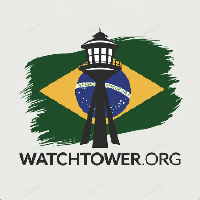

Biography

Hello, my name is Carlos Alberto. I hold a degree in Systems Analysis and Development (ADS) and I am currently studying Information Systems (SI). Since I was young, I’ve had a passion for technology, especially for how it can be used to provide equal access to information. I believe in the power of the open-source community and how it can transform the world. I have a special fondness for indie games, and who knows, maybe one day we can play a round of Terraria together! I’d also love for you to explore my projects on GitHub. Perhaps something I’ve created will inspire you. I truly believe that over time, we can build a future where everyone has free and barrier-free access to the information they need.
Projects
-
 Project TEA
- Application to assist patients with Autism Spectrum Disorder.
Project TEA
- Application to assist patients with Autism Spectrum Disorder.
-  Social Decentralization Project - Inspired by the ideals of Aaron Swartz.
Contact
You can contact me by email: cgomespimentel7@gmail.com
Check out my profiles:
 LinkedIn
LinkedIn
 GitHub
GitHub